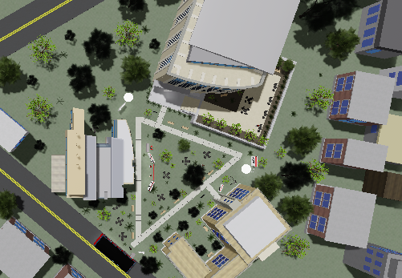
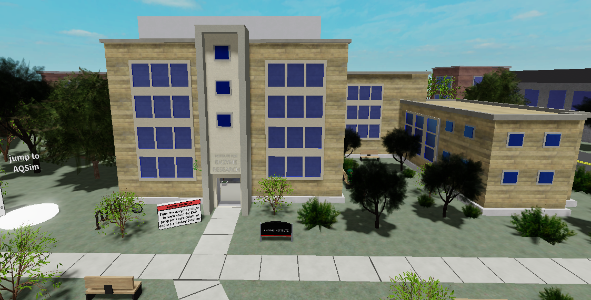

Check out my ROBLOX experiences!
See the EAP Experience, a project made for UW-Madison where I was the main developer.
Also check out the AOS Experience, where I helped with programming, UI, and music.
If you are curious about this project, you can learn more at the Holloway Group's website'.
Finally, you can see my profile here.
See some screenshots of 3D models I made for the project in Roblox Studio here:
Note: The tree models were imported free assets, but everthing else I modeled myself.

